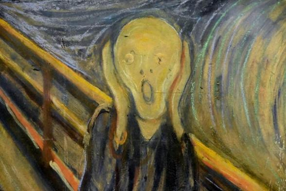

El Expresionismo
El Expresionismo fue un movimiento artístico y cultural que surgió a principios del siglo XX, caracterizado por una profunda subjetividad, la distorsión de la realidad y un enfoque intenso en las emociones humanas. Rechazó las normas tradicionales y buscó representar las emociones internas del individuo.
Características Principales
- Énfasis en la distorsión emocional y psicológica de la realidad.
- Uso de colores vivos y contrastantes para transmitir emociones intensas.
- Formas y proporciones exageradas para crear un impacto visual.
- Búsqueda de la representación subjetiva, en lugar de la objetiva, de la naturaleza y el ser humano.
Artistas Destacados
Edvard Munch: Su obra más famosa, "El Grito", es un claro ejemplo del estilo expresionista, que transmite angustia y ansiedad.
Egón Schiele: Conocido por sus retratos crudos y su exploración del cuerpo humano y sus emociones.
Wassily Kandinsky: Pionero del arte abstracto, Kandinsky exploró el uso de formas y colores para expresar sentimientos internos.
Obras Representativas
- "El Grito" de Edvard Munch: Representa la desesperación y la ansiedad humana.
- "La familia" de Egón Schiele: Obra que examina las relaciones humanas de una manera cruda y emocional.
- "Composición X" de Wassily Kandinsky: Una pieza abstracta que utiliza el color y las formas para expresar el caos interno del artista.
